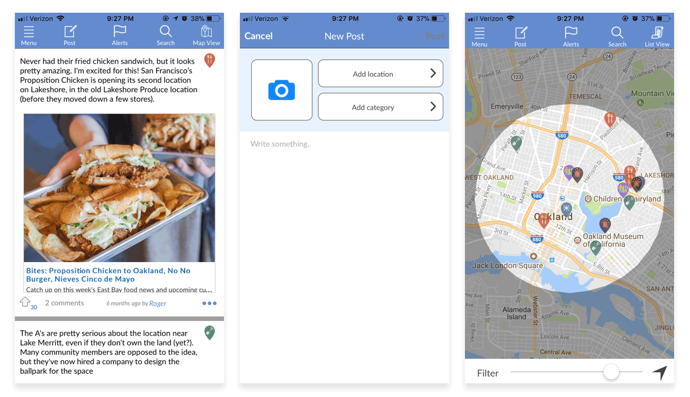
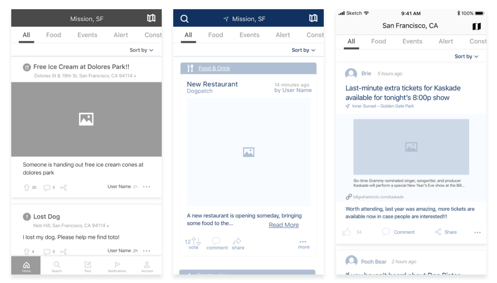
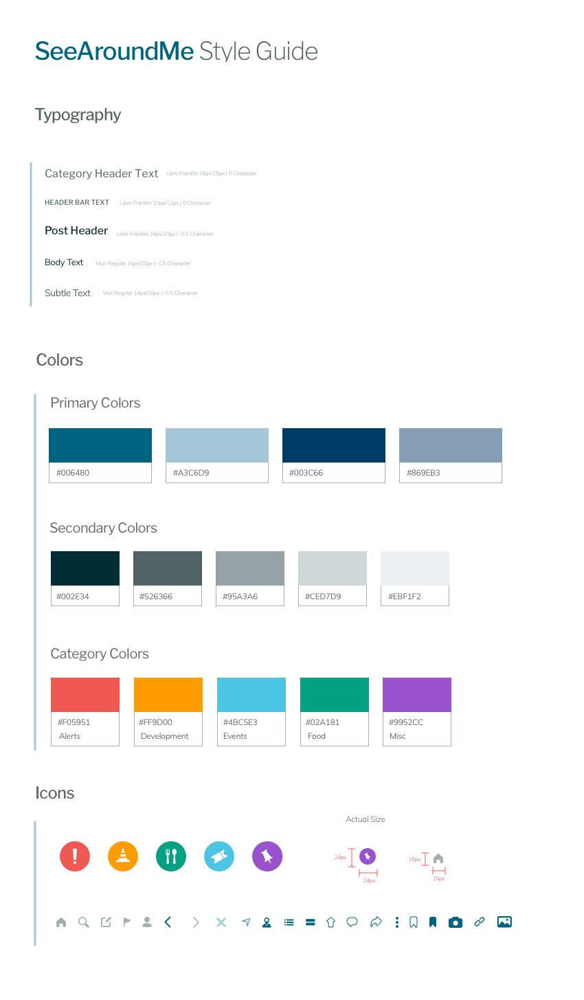

SeeAroundMe
Creating a better experience for skimming and sharing location-based news

The Client
SeeAroundMe is a local community news app populated by user-generated content.My Role
End-to-end Product Designer on a team of 5 designers.The Challenge
How can we improve the experience of quickly finding, consuming, and sharing local news?
The Solution
- Moving to native iOS development
- Reorganizing information architecture, navigation and layout
- Rethinking newsfeed, posting and sharing
- Rebranding and visual re-design
Analyzing the current experience
As a beginning-stage MVP application, SeeAroundMe’s app had some glaring usability issues, particularly with the navigation and layout. Previous research revealed that users wanted to be able to quickly get their news at a glance and be able to easily find the posts that were most relevant to them. We set out to create a more seamless and intuitive experience and tighten up the UI of the app by creating a style guide and implementing a visual re-design.

Re-thinking the information architecture
The Information Architecture of the app was a bit of a mess, with a hamburger menu nested in the main navigation bar and very little organizational hierarchy. After creating task flows to flesh out the IA of the site, we broke the app out into 3 main sections to focus on: newsfeed, new post, and accounts.A birds eye view of some of our task flow explorations
Testing low-fidelity prototypes
Our group design sprint led to the creation of initial lo-fi wireframes. We explored and tested 3 different versions. Each prototype had its pros and cons so we incorporated feedback from each version, using one as the primary base.We tested 3 different prototype versions in our lo-fi phase
Key Considerations
- What navigation structure is most intuitive and easy to use?
- How to filter content and categories?
- How to organize content within each post?
- What information is most relevant to show?
- Which format for posts makes the most sense?
- How do we reduce friction in the posting process?
- How do we differentiate between different types of posts?
Visual re-design and style guide
One of our focuses for this project was a visual re-design to give the app more of a voice and enhance its credibility and usability. We created style tiles that led to a style guide that we applied to our hi-fi design. We came up with a handful of hi-fi examples that we chose from and developed further.
Final prototype
Newsfeed
- Easily distinguish and sort through content with visually-differentiated categories
- Updated isolated post view with better interaction flow
Navigation
- Restructured main navigation and moved to the bottom to fit with iOS guidelines
- New tabs for topic categories and added category slider to quickly filter content
New Post Flow
- Updated to easily select category within the post page and add attachments
- New interactions and feedback cues for loading attachments and posting
Additional Key Changes
- Bookmarking function - easily save posts for sharing or referencing later on
- Dedicated activity page - more visual distinction and consolidated notifications
- Accounts and settings - re-designed accounts page and re-organized flow